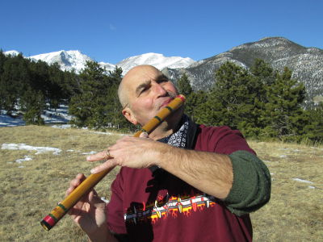

 Paul Alexandre John was born in Calcutta, India in 1952 to Armenian parents. At a young age, he began exploring both art and music. He experimented with painting and carving while also playing the harmonica and drums. By age nineteen, Paul was in England and working as a boilermaker welder during the day and spending his free time practicing the flute with brass flutes that he had constructed himself. Soon Paul went to Italy where he made his living as a street artist and musician.
In 1972, he returned to Calcutta where he met the Indian flute guru Pundit Gour Goswami. At this point in time, Paul began playing the Indian Bansuri flute for the first time and he studied Indian classical music under Gour Goswami for five years until the guru's death.
Paul continued onward to Australia and enrolled in Claremont Art School to hone his art skills. In addition to studying painting, sculpture, printmaking, and life drawing, he taught at the school as a professor of bamboo flute. As a sculptor, Paul was able to utilize his background in welding by specializing in steel sculpture. After three years, he graduated with honors from Claremont with a diploma in Fine Arts.
In 1981, Paul moved to United States where he has continued to practice both disciplines. As an Indian classical flutist, Paul has been composing, developing new flute prototypes, and performing in concerts. In addition, he has recorded three albums to date and he has been periodically traveling to various schools to hold flute-making workshops for schoolchildren. As an artist, Paul has been continually experimenting and evolving. His styles and themes have cycled through numerous realms, including those of the imaginative, of baseball, of carpets, and of the ocean. His artwork has been exhibited in various locations, including the Embassy of Armenia in the capital of New Delhi, India, where Paul participated in the inauguration of the embassy.
Equally the artist and musician, Paul Alexandre John continues his exploration of both in the quiet solitude of his studio in rural Maine.